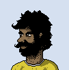

|
NAME | Frej |
| QUESTION | What will my role in the monarchy be after my sibling Ev takes the throne? |
|
NAME | Frej |
| QUESTION | What will my role in the monarchy be after my sibling Ev takes the throne? |
Frej
The summer palace is nestled in a cosy valley in Rakanayak. Frej descends the central stairs with considerable anticipation: the will is read today. They are the last to arrive. Their younger sibling Ev is already here, visibly bored and impatient. Neither knew their mother well. Uus and El spent so much time raising them they might as well have been their parents.
Their mother was styled 12 Taadiadi, the twelfth monarch of the state of juta-arkeny-and-miscellaneous-territories-and-colonies to call themselves "the increaser". Unlike the previous eleven, it is hard to point to what she increased. Certainly not the national territory. Himenepit seemed more ready to secede than ever. No wars had been fought since the previous monarch.
Perhaps its debts had increased.
Frej thought they were prepared for this moment. Tutors, essays, research, study, training. The ceremony proceeds. Frej finds themself distracted. The sounds of the incantations and set phrases are muddled by their inattention. The moment comes when the name is declared.
It is Ev's. Ev! Frej looks in their direction. The two are not stood together, but rather at quite a distance. Not so far apart that a facial expression cannot be read perfectly.
Ev's eyes and mouth open — they look as one who has just won a lottery Ev is stoic in accepting the duty that has been unexpectedly required of them Ev is trying their best to not betray the fact that their stomach has dropped from fear
|  | NAME | Snorri |
| QUESTION | How do I leverage my skills with poetry to political power? |
Snorri
There is a modest farm on the island of Himenepit, and its owner is Snorri, third-oldest of ten children. Its basement-pantry contains enough food for probably two years, if not three: fruit preserves, fermented wortel, yellow radishes, cabbage, spinach, beets, and onion, various grains, potatoes. But its bookshelves contain even better sustenance: books on law, history, romances, fantasies, and above all else poetry.
Snorri is sitting on the porch, reading a newspaper. In local news, the provincial legislative election is in only eight weeks. Somewhat of a farce since there's only two monarch-approved parties. The newspaper has some fluff pieces about the candidates. Snorri turns the page to the National section.
12 Taadiadi has died! There hasn't been a change of monarch for decades. He was barely a child when it happened last. Snorri considers what this could mean for him and the vague plans he's been turning over in his head for the last few years. He...
...writes a letter to a friend in Kunzi, who is incredibly hostile to the monarchy ...writes a letter to a friend in Rakanayak, a childhood friend who somehow seems to be well-connected to the upper classes ...writes a letter to a friend in Juta, someone who he met at a poetry workshop, whose personality he doesn't understand well, but who gives good advice
Frej
Your wrist still slightly hurts from the force of Ev yanking you through the curved doorway into their palace apartment. They apologize again for it.
"But Frej — Frej. What is going to — Frej. I can't..."
"Calm yourself. We have to make this work. Maybe I can help."
Ev brightens.
"Can you simply take it instead? I know you wanted to. I never paid any attention anyway in —"
"No." You cut them off. "'Abdication is death'. It is yours."
Ev collapses onto their bed, face down, and mutters:
"They said I have to be ready for the naming tonight. What am I even supposed to do."
"Choose a name," you say.
"Which one?"
"I think 13 Taadiadi is a good choice, for continuity's sake." "You could go with 9 Tashuen. A 'mediator' would be good for a change." "Listen, Ev, the time is right for a 'restorer'. Say 5 Taprekkut." "You think I know? Make something up. Be the first of whatever you want."
Frej
You are wearing your best robe, and Ev has, per tradition, been given a red silk suit. It fits perfectly. (How could that be? Was it already tailored before today? If so, how was it known...?)
The naming ceremony goes well. Ev succeeds at containing their anxiety. They sit and stand and make the gesture of deference-to-the-past at the right moments, as you coached them to in the painfully small amount of time available. You're proud of them. They are now — and will be for the rest of their life — the monarch 5 Taprekkut, temporal embodiment of the eternal state of juta-arkeny, etc. etc. Maybe they will get around to actually doing some real proper Restoring. Arkeny could use it.
You try to gauge the time at which the veil of ceremony has finally dropped, and find a moment when it is possible to get Ev's attention again, and have a conversation about the future.
You do not succeed.
Someone had anticipated you would want to do exactly this, and was committed to preventing it. You just barely got enough of a look at the person who, from ten paces away, nodded meaningfully at a guard — who tactfully, but forcefully redirected you, first out of the presentation chamber, then out of the palace, then into a car.
It was, you're pretty sure,
Josk, a minor economic advisor, you think? For agricultural imports/exports? Why would he even have the authority to detain you?
Josk and I are the same age, and used to play together in the snow and mud before our courtly responsibilities separated us into different social categories. I'm pretty sure he only received a place in the court at all because of some complicated deal my parents had with his.the chief minister — well, former minister, technically, in this intermediate time when no cabinet formally existed — of the Civil Harmony Administration General Iss, who retired last month — not to say that it isn't perfectly normal for her to attend state functions such as this as an honored guest even in retirement
Snorri
A week passes, and you receive the reply from Surodr:
to my most honored friend no event, necessarily, ever occurs in the cosmos except at the right moment i will do as you suggested and communicate your intention to every person i know who will be receptive to it (and keep it concealed from every person i know who will be hostile to it) (no governance is, in the end, possible on our blessed continent except that which is allowed by the people so governed) you ask for guidance: (and each time it happens, i am the more humbly flattered that you do; i am pleased that my past guidance has met you well) my suggestion to you is that you travel. leave your farm in the capable hands of your sister othran (to whom convey my warmest greetings! it has been years and i hope she is healthy and tranquil and joyful!) and come to where streets are narrow and the river of opportunity is wide and see how the citizens of arkeny live their lives (bring your pen and your book) (so ends a message from your imperfect friend surodr)Well, that definitely doesn't narrow it down. That could be any city. Surodr's right in any case that Othran could manage the farm just fine.
You're feeling impulsive enough to let the suggestion carry you. You decide to call your cousin (who works occasionally as a travel agent, when running the bookstore doesn't take up too much time), and
book tickets to the city of rakanayak make a plan to visit Surodr in person; maybe they'll be less cryptic face-to-face decide to go to serkaioba, the capital.
| NAME | Rossum | |
| QUESTION | Is there ever any more to life than playing host to fancy dinners and performing vestigial ceremonial roles in local happenings? Is there time yet for one more adventure? |
Rossum
Rossum contemplates his dining companions.
One offers a formulaic toast: "to the health of the Graf of East Rakanay, grandson of Garo, granddaughter of Tieret, granddaughter of Tiesum, who was fatally injured (may his soul find peace wherever it has returned) in the crimes of 2988, which we shall not soon forget!"
The table raise their glasses, and Rossum returns the gesture. His face beams with gratitude, and humility. He meets, one at a time, the eyes of every guest.
All but one of the people attending are relatives, if you go out far enough on the tree. Perhaps the last might marry into the family some day, the way things are going. Rossum is fond of all of them.
Alone after dinner, Rossum takes a measure of digestive powder and writes, by a window letting in the summer evening air, in his diary:
"dinner pleasant. remember to get spice mix details from Z. veranda worked better for music now that we put the insect screens up"
He looks at the page he just written on. Looks at the previous page. Looks at the previous ten pages. He makes one addition:
"should call mom"
Somehow things always seemed to get interesting when she was around..."have been thinking; buy boat?" "maybe time to go back to the desert" "how get more material for novel?"
Snorri
A taxi to the ferry-port, a ferry to Kunzi, and then finally the eastbound train. Your cousin Ndos got you a good bargain. A comfort-class room all to yourself, with a bunk bed and its own commode, even though your particular journey is not overnight. An awkward gap between reservations farther east and farther west on the line made it inexpensive.
Should be a pleasant six hours or so until Serkaioba.
You have a cup of tav, a meditation by the window, read the newspaper (the young 5 Taprekkut has been named and installed — crime on the rise in serkaioba — new cabinet appointed — immigrants from the north looking for work as carpenters — a new film company has started production in juta — rakanayak drinking water problems again) and take a mid-day meal and nap.
Opening your suitcase to find a shirt to change into, you see your cousin left you a note: he took the liberty of arranging a reading and autograph session for you at Circle Books, right after the scheduled arrival of your train. He promised the owner of the shop there would be new material. "Hope you have something ready! All the best, Ndos!"
Thanks, cousin.
You fold out the small table attached to the wall and pick out a pen from your case. This won't be the first time you've written under time pressure. A topic... a theme... a departure point...
Something about being uncertain of your destination Something about the will of the people of himenepit Something about wealth and poverty Something about the monarchy Something about generosity and obligations
Frej
The car doors finally unlock in Rakanayak city, in the heart of Residential Neighborhood No. 2. Sure, it doesn't compare to the palace, but even given the standards of your upbringing, it's not too bad a place. The proud houses are set apart from one another by well-kept lawns.
"You will stay here," the driver says, pointing with one hand at a blue house with silver accents, the other hand holding an envelope of cash. Her accent is from somewhere on the peninsula. Tarodaro? Birnallong? Not sure. The envelope is shoved uncomfortably close to your face.
"For food. Clothes. Other things."
"What do you think you're doing?" you say, almost laughing with outrage. "You can't tell me what to do."
The driver pulls out an item from a suit pocket and pushes a button. You hear your own voice:
"... .. ... ...i.te., .v, the time is right for a 'restorer'. .ay . .aprekk.. ..."
Then static, a click, silence.
"Some things we can do."
Your mouth is dry. She continues, in a conversational tone:
"We don't like make threats. But. We don't like you make threats. Stay here in city."
The car leaves. You open the door to the house. You notice a pair of keys on the floor, and an unpainted sillhouette on the wall in the shape of a telephone, next to cut wires.
You set out into town in search of a public phone. You set out into town in search of something to eat. How many hours has it been? You weren't wearing a watch when they took you. Overwhelmed, you find something heavy and hurl it into a wall. You decide not to make any obvious moves yet, and instead carefully try find out if anyone's still observing you.
Inspect the living quarters for bugs, of multiple varieties.
| NAME | Aeia | |
| QUESTION | Where is my father's book?
The one he wouldn't let me read as a child. ("Not yet, little one." he would say, "Maybe when you're older.") The one I would find him poring over at his desk whenever I snuck up to the library late at night. (He would always be smiling... I wonder if he knew I was watching.) The one he would carefully wrap in a piece of linen and store in a locked wooden chest (now empty). Where could it be? |
Aeia
Aeia helps with the end-of-day routine, even though it's not strictly necessary. Still, maintaining a good relationship with the employees is important. Demonstrating that she's willing to do the work herself, that she's not above them, even though she is technically the owner.
She focuses on the most tedious tasks: she mops the bathroom, takes out the trash, does some redundant dusting just in case, re-sorts the de-sorted book pile back onto the appropriate shelves, and ensures all the rows are even and visually pleasing. Dad wouldn't stand for anything less.
The staff bring in the signs from outside and restock a few more copies of the bestsellers. They count the register, settle the logs, and are just about to turn off the lights. Aeia stops them with a gesture:
"Oh, yeah, no, don't worry about it — I can lock up. I still wanted to set up downstairs for tomorrow. You're good. See you in the morning."
They nod and wave, as the bells on the door announce their exit.
Aeia stoops as she climbs down the basement stairs, and looks around the space.
How to arrange it for the reading? Customers did seem excited after the last-minute announcement she scribbled on the outside board yesterday.
Just a couple rows of chairs should be enough. Excitement of a few isn't necessarily interest of many. Pull a lectern out of the attic to make Snorri feel more comfortable, and make a circle of chairs around that.
The attic. As a child I used to love to look out of the small round window up there, watching people make their way along the roads below. That was years ago, though, and I doubt anyone has been up there in a long time.I hope it isn't too dusty.
Make sure there's a table with plenty of copies of his first collection, "Into the Forests of Negima". That's the one people have heard of.
Rossum
"Ro! How are you?"
"Good, mom. Thanks for returning my call."
"Of course! Sorry I wasn't home when you tried me. Out climbing rocks."
Rossum had a small laugh — this was a new one for her. Ydra, well into her late 60s, had apparently decided she needed another challenge, on top of — what were the last few? skiing, sailing, welding, woodworking, racing cars...
The part of Juta she was in, in the northwest where the desert met the mountains, was certainly a good place for bouldering. She gushed about the views to Rossum.
She told him also of the small party she had talked into joining her on the trip. One, like her, was widowed, and the other two were retired factory workers — school friends, from before Ydra had married her late husband.
"That's great, mom, I'm really happy you're enjoying it. You know, I've been trying to figure out what to do with myself lately..."
"Well you could always come down for a visit! You know you always have a room here whenever you need it. We could find something to entertain you."
Let's see what Mom's been up to in person — the desert air might do me some good! And she mentioned entertainment... maybe watch an old movie or read some family books... yes, a nice, relaxing trip to the desert sounds perfect..."I tell you what, Namodr was just telling me yesterday about this cross-continent race..." "I think my sister — your aunt Pori — had a brother-in-law that was starting a business and looking for a partner. You could put that degree to some use at last, eh?"
Snorri & Aeia
The basement of Circle Books is packed. People stand by the walls, sit on the stairsteps. The few copies of your books that were for sale here have already sold out. Snorri chats a little while with Aeia before the show starts. The two of you are acquainted with one another; you'd met during a previous reading at Circle a few years ago, and once at a publisher's conference.
The lectern is a bit dusty, but Snorri jokes that it gives the scene a suitably professorial ambience.
He first does a couple of the old hits: "don't leave a pair of shoes outside together, or a hygrakym will grow out of them and run away", and his translation of Kladimny's "what is a ghost?"
Snorri's newest work is titled "departure": the imagery is from the experience of travel, wandering, being lost; it lingers on infinite cycles of repetition, and things that break these cycles; it meditates on the rise and fall of nations for trivial and unpredictable reasons, machinery breaking down, losing parts; it ends with a song to regrowth amid collapse.
The reaction is mixed, but strong. There is earnest applause from the front rows, but a curiously negative reaction from the back of the room. They don't jeer, but they look very angry. The displeasure started midway through "departure", during a passage that delivered an emotional question mark about the the smashing of the wall of the Serkaioba Garden two hundred years ago.
Both of you notice, with shock, that one of the attendees pulls a length of metal pipe from his jacket. Immediately, another patron notices it and tries to wrest it away from him.
Either Snorri or Aeia may choose any of the following:
Retreat behind the rows of chairs behind the lectern. What kind of madness is this? Actively intervene. You'd rather be injured yourself than let a stranger be hurt by accident.
Try to break right around the scuffle and get to the stairs, and escape the basement entirely. First make sure the other of you is out of harm's way
Frej
The house is large. It doesn't seem dusty or moldy or overrun by pests. Probably someone lived here recently, but almost all of their furniture is gone. There's a well-equipped and generously sized kitchen, with a small dining table in it. There is one large bed and dresser in one of the five bedrooms. There are three bulky televisions, one in the entry way, one in the kitchen, one in the bedroom. You don't notice any obvious cameras or microphones.
Through the window in the bedroom you notice a person standing by a correspondingly positioned window in the adjoining house. It's getting to be dark enough outside that, although you can't see their face, you can see their outline clearly against the light in the room. You feel somehow certain they are looking directly at you.
They make a sign above their head with their two hands: one in a fist, one pointing upwards. Your breathing stops. Hadn't they disbanded, generations ago? The outline moves away from the window.
Make the sign back at them, hoping they see. Open the window and shout, hoping they hear. Exit the house and knock on their front door. Ignore them. This is some kind of trick. Head to town, but leave a note that they will understand only if they are an ally.
I imagine this as some kind of intricate steganography involving ant pheromones
Rossum
It's been a relaxing time at your mother's bungalow in the desert. You feed some wortel leaves to one of her two pet iguanas. This one is the more social one; the other is hiding somewhere. Your hands are pretty tired after mom gave you a brief rock-climbing tutorial earlier in the morning. You enjoyed it.
You've been having a long, rambling conversation with Ydra in the early afternoon following lunch. You try to express to her what kind of experience you're hungering for... something [one or more of:]
creative physically demanding mentally demanding involving travel involving directing other people involving risk that reminds you of your youth
4, 6, and 7, say — really, I guess I've just been thinking that if I opened myself up to it, I might get swept up in a big, consequential adventure, something that matters, like in the story books of my childhood. Sounds a bit silly now that I say it out loud! Nobody just gets "swept up" in epic battles between good and evil, not in real life, heh.
Snorri & Aeia
Snorri approaches the heckler first. The pipe thankfully misses his head, but a fist connects with the side of his head. Aeia body-checks him, and he loses grip on the pipe in the middle of a second swing, and it goes flying — and makes a sort of chonk sound as it embeds itself strangely into the wall of the basement. The stranger loses balance and falls sideways onto the floor
The general population of the reading has decreased a bit as people have tried their best to get away from the scuffle, limited by the choke-point of the stairs exiting the basement. This isn't what they signed up for!
Snorri and Aeia may may both independently choose from the following set:
Try to physically expel the stranger from the building Try to interrogate him
I want to know what's whatGive him a good kick Inspect the pipe now sticking out of the wall See if anyone else in the crowd needs help
5, then 4
| NAME | Kaldan | |
| QUESTION | what was that sound? |
Kaldan
You will be eleven years old twenty six days from now. Mum and dad are gone for the week. Uldon is in charge and he's just awful. He makes you actually finish your flute lessons, and cooks food all wrong.
But Uldon is asleep for now, victim of an overpowering late afternoon nap. You're temporarily unsupervised. There are noises from the street. Two people politely arguing. Their voices sound sort of like dad and mum's friends. You cross the house to a window facing where the noise is coming from, and you see a car drive off, and a grown-up — but not a very old one — go into the empty house next door. Is someone moving in there? It's been empty for a while. You wonder if they have kids your age.
Bring them a steamed bun, everyone likes steamed buns
Ugh no not 2 why would I want to play the flute MORE. I mean 1 seems like the obvious move but I'm gonna keep my options open for 4 if the opportunity presents itselfGo show off how good you are at the flute Keep watching from the window Hide in the bushes and scare them as a joke
Frej
It's the middle of summer, and the elongated spiral clouds obscuring the sunset mean the ket is weak, so the fluid of crushed grass and chrysanthemum seeds will do. You do your best to improvise a mortar and pestle with the rounded blunt end of an ivory handle of a fork and a bowl from the kitchen. You trace, onto the concrete slab in front of the door of the house adjacent to yours, the symbols for "I will return" and the four-fold sign that means "1/16 of a day" with the paste, let it soak in for a minute, and then wash it away with a cup of water. You see a pair of ants have already found the trail.
Turning around, you notice a child, who moves slowly as though he thinks he is being very stealthy. He is loudly eating a steamed bun.
Greet the child as a respected peer Dismiss the child as an annoyance Immediately explain what you are doing and why Ignore the child Ask the child who he is and what he's doing here
Aeia
You give a hand to an somewhat elderly woman who was knocked over in the confusion. You recognize her — she's a professor at Gaio Lyceum, and a regular customer. She thanks you, mutters something about what the world's come to, and proceeds upstairs as hastily as she can manage.
The pipe is embedded in the wall, which is a surprise, as you wouldn't have thought the wall would be so weak. There seems to be empty space behind it. You notice Snorri is arguing with the young man who attacked him.
Pull the pipe out, and wield it pointedly as you approach the two of them Pull the pipe out, and use it to see if you can break down more of the wall. Leave the pipe alone for now, while there are still people observing you.
But I also would like to make sure that Snorri doesn't get overpowered.Go upstairs and call the police.
Snorri
The young man formerly wielding the pipe is furious. Your cheek and nose hurt terribly. He manages to rise to his feet before you can stop him. You have a grip on his shoulder, but it's weakening. You try to ask him who he is, what he wants. He doesn't give a name, and shouts some insults at you — tries to hit you again, but you block his hand — his grievance seems to be that you, like all residents from himenepit, want to shame arkeny — you want the monarchy to collapse — you want public order to collapse — you want only chaos and weakness.
Reassure him that you don't want those things Think of a quote from a poem of yours that you think he will find calming Think of a quote from a piece of literature that you think he will identify with Criticize his broad-brush stereotypes of your home Insist it's more complicated than he thinks Strike him back
Rossum
Your mother smiles. "Something that matters, eh? I suppose it depends on what big consequences you have in mind."
"Preventing some injustice? I know some friends of your father have some opinions about that..." "Seeing something noone's ever seen before? I hear the ket forecasters are saying a chromatic ekro is due to appear over the great southern sea of an incredible size, some time in the next six months..."
Unsure of the consequences, but it sounds exciting!"Building something the world needs? Neither of us is a monarch, to be sure, but we do have certain resources."
Kaldan
The steamed bun you brought is delicious. You try sneaking by the stranger but they clock you! What're they doing, though? Rubbing something on the front stoop of the green-gray house your parents told you to stay away from. That's weird! You hear some shouting arising from your own house. Maybe Uldon woke up.
Oh wait I was gonna give them the steamed bun! Go back to the house to get another one. Oh no my cover is blown! Run into the back yard. Ask them what they're doing. If they're breaking the rules about staying away from the green-gray house, they're probably cool and not like other grown-ups and stuff and maybe you can be friends.
But I also want to make sure this human gets a steamed bun I'm gonna be really preoccupied about that these steamed buns are DELICIOUSPlan B! What was plan B? Hide in the bushes, probably.
Frej
The child introduces himself as Kaldan. You decline the half-eaten bun, and tentatively accept the offer of a fresh one at his home two doors down. That'll save time going into town.
At the door you are greeted by Uldon, whose caretaker's frustration with kaldan's escape immediately dissolves into anxious deference at the moment he recognizes you as a member of the royal family.
You consider how much to explain to him. Clearly this is a family of means, but you're not sure you recognize their sign, which is embossed above the door.
Divulge everything — the fact that you have been exiled from the palace, and most likely being observed somehow. Remain tight-lipped, and make up some cover story for why you're in rakanayak. Emphasize you were trying to help Kaldan back home, the endearing scamp. Probe carefully whether Uldon knows about the identity of the inhabitants of the green-gray house.
2, then quickly change the subject to 4Also, make sure to slip something in about hearing there were steamed buns, as my stomach growls
Possibly overwhelming Uldon with the plethora of subject-changes
Try to find out if Uldon knows any other information about the unusual succession.
Snorri
As he is focusing on getting away, and, frankly, did not expect you to physically resist at all, much less counterattack, you manage an absolutely devastating uppercut. He's more or less incapacitated: not quite unconscious, but not struggling as much.
Return to verbal interrogation (any of the previous options remain valid) Try to restrain him in his current state. Ask Aeia for help Leave this mess of a situation
Aeia
You draw your attention away from the pipe for now, just in time to see Snorri decks the stranger. Although he is injured, he's at no further risk in the short term.
Go upstairs and call the police Try to ask questions of the stranger yourself Find a first aid kit
Wow, Snorri really clocked that man. On second thought, maybe I should make sure that he doesn't do too much damage. (I'm sure someone else will notify the police.)Try to get the stranger out of the building as soon as possible
Rossum
"To be sure I'm no expert in the subject," your mother continues, "but I know there are some in Serkaioba, at the Lyceum... Sud knows some folks there. You remember Sud? She was around at dinner when you visited a couple years ago. White squid stew? Nebu steak? Anyway — it's supposed to happen at the confluence of a few different ket waves that don't ordinarily happen except in winter. What was she telling me... They've already made landfall in a few different spots. I forget where. Here, you know what, let me give her a call right now."
She leaves the screen-porch and goes back into the house where the phone is. You sip at your beer and wait for her to return. The setting sun over the desert scrub makes for a pleasant view. After a few moments of chatter, she returns and explains what the situation is.
You could just go straight to Serkaioba, pull some favors, and talk to some experts about planning an expedition
An expedition! Now this sounds like a proper adventure! Definitely need to get some experts together to do it right. After all, what's the point of the aristocracy if not to "pull favors" every once and a while to get people focused on important matters?One wave has already completely covered the Spring Islands. They're a weird bunch — the mainland government tried to build a ket mitigation station there, and the locals just set fire to it. You could go there yourself and see what the effects are like. A second wave has a vortex reaching up to tlorukpit. Not a bad vacation spot. Nice weather. You've been there before a couple of times and can get by in the language enough to order in a restaurant. A bit politically unstable, but as long as you don't stay out too late... The third wave is developing over Tarodaro. It seems less strong so far from what Sud said, but rapidly changing. About the Tarodaro people, you don't know much. There's been some friction between the peninsula and Arkeny, especially you all in the upper classes...
Snorri
Aeia approaches with some concern. You're somewhat surprised yourself at how violently you responded, but it was a shock that such a thing would even happen at such an event. You ask Aeia if there is any rope or twine or anything similar in the shop. Better to just incapacitate him than do any more unnecessary damage.
You succeed at improvising something, and hardly a moment too soon. He returns to consciousness, and to a barrage of insults and frustrated rambling. You hear sirens approaching, and some unfamiliar voices upstairs.
Move him upstairs, the easier for the police to take care of him. Try one last time to get some information from him.
kind of aggressivelyTry one last time to appeal to his humanity.
Aeia
Snorri seems to have come down somewhat from the peak of excitation of the brawl. You help him restrain the intruder with some package twine. He's facing away from the pipe at the moment, and nobody but him, you and Snorri are in the room. All the other attendees have long since fled.
See if you can break through more of the wall where the pipe has pierced it. Simply pull the pipe out of the wall while trying to do minimal further damage. Find a first aid kit for Snorri's injuries. There are some noises upstairs; see what's happening there. Start cleaning up some of the toppled books and shelves.
2, then 3 and 5. I don't know what's behind that wall, but I'm sure it was hidden for a reason. I don't want to investigate further until I'm alone.
Kaldan
You meet Frej. They are very polite and nice but also talk to you like you're a normal person, and you find that pleasant for a change. They don't really explain what they were on about with rubbing stuff on the ground. They said something about having tripped but you are pretty sure it wasn't totally true. Anyway you promise them steamed buns. UNFORTUNATELY Uldon definitely woke up and he made you go to your room but not before you got him to promise to give Frej some food.
sneak out into the hallway to eavesdrop on whatever the grownups are talking about.
keeping with my general theme of wondering what the sounds are. Also I will do so incompetently that I might as well have done 2. I will probably just try to sneak a bun.brazenly go straight back to the kitchen and insist you're hungry and need more food yourself. sulk in your room, hoping that uldon will cut you some slack and let you talk to frej more later if you follow his stupid rules this once
Frej
Uldon offers you the best food he can manage on short notice. He apologizes constantly — he seems genuinely appalled that he can't present you something better — but the reheated leaf-wrap cumin-whitepea dumplings are some of the best you've ever had, and he calms down a little when you say so.
You make up some kind of story to explain your presence here. It's not hard to overwhelm Uldon in his current state.
Something about intentionally living less isolated from the people — wanting to gather information about the needs and wants and lives of the subjects of the crown, on behalf of Ev — it being so important for the transition to go well. Something about a nebulously self-imposed spiritual journey, throwing in some fashionable pseudo-philosophical buzzwords Something about being simply bored of palace life. There's bound to be different parties, different food, different people here in the city.
A combination of 1 and 3 - something like "officially" 1, but between-you-and-me also 3
Rossum
Serkaioba! It's been a while since you've been to the city. Always strikes you as a bit dirty and noisy, but full of energy. A pedestrian you almost collide with in a moment of inattention treats you to a bit of yelling and gesticulation — you smile and wave back at her.
It's only five minutes' walk from the Number 7 Hotel to the Lyceum, across the newly rebuilt Gaio Bridge — open already for foot and bicycle traffic, but not yet cars. The thing the Lyceum prides itself on, which is convenient for your present purpose, is that it purposefully hires a mixture of more theoretical academics and vocational experts. You've scheduled several appointments. Which was the first one again? You'll have to check the schedule you wrote down on a napkin...
Prof. Ottu, specializing in long-term ket & ketigenic climate forecasting Prof. Manyadarangolla, expert in small-scale ket phenomena, with emphasis on their interaction with human physiology Prof. Lis, naval engineering and management Prof. Yep, from a group whose grant proposals say it studies "medium-scale expeditionary team logistics", but you selected him because you heard some of his students refer to it as the "adventuring department"
ah yes, the adventuring department fellow! Perfect: I'm sure he'll know who to talk to and how to make all this work...
Frej
You natter away for a while. Uldon seems to be nodding almost obsequiously in agreement. But he seems to agree more sincerely when you subtly imply that you find yourself trapped by the routine of your obligations — even though, in truth, at the moment you would gladly go back to them if it weren't virtually impossible!
You check the clock. Assuming you'd been outside for 15 minutes, the 90 minutes you had previously imagined as allocated for a trip to town has nonetheless already come close to running out.
Separately, you notice the wide-eyed stare of Kaldan peeking between the columns of a balustrade overhanging the light dining area.
Call out cheerfully to Kaldan Make a sly sign to Kaldan alerting him that you see him, but in such a way that Uldon does not notice Politely excuse yourself for "an appointment"
after attempting 2 with a wink and a wave but definitely conspicuously enough that Uldon noticesAsk Uldon to come outside with you — you'd like backup when you approach whoever is occupying the other house
Aeia
You retrieve the pipe. Naturally, it's quite dark behind the hole, but there does seem to be a significant amount of empty space, more than could be explained by the pipe's intrusion itself.
The first aid kit is in a closet behind the shelf that houses the northern philosophy section, which is now horizontal. Thankfully it's not too tall a shelf. You manage to right it, and clear access to the closet, although a lot of its books are scattered across the floor. You drop the first aid kit in the general vicinity of Snorri. He seems busy whipping himself up again into a rather emotional state yelling back at the intruder. Understandable. You keep the pipe in your hand as you try to stare its previous owner down, but he ignores you.
A pair of uniformed people come down the stairs. "Serkaioba Police! Attention all! Cease other activities!"
"Hey, we have this under control. Just a... literary disagreement"
I carefully put down the pipe and wave at the officers.Ignore them and wave the pipe with more obvious menace. "Thank goodness you're here! Take this man away!" "Yes, officer! Activities ceased! Permission to register an official complaint of disruption of civil order!"
Snorri
You match his earlier energy, shouting obscenities and insults. You have the upper hand here in terms of imaginativeness, vocabulary, and syntactic complexity. It's not really a fair fight. He tries to spit in your face but it doesn't achieve escape velocity, leaving a bit of dribble on his shirt.
"Fuck you! It doesn't matter! When Maaz is province-principal you idiots will be beaten to shit anyhow."
You recognize the name as one of the candidates in the himenepit election.
The police arrive. You notice Aiea has left you some bandages and antiseptic cream. Your face is still bleeding.
Get in one last blow before they can physically restrain you. Be on your best behavior in the presence of an authority that only wants the tiniest excuse to take anyone's side but yours Attend to your face
Kaldan
Frej catches your eye, and Uldon almost turns around, but half-way through the motion, sighs and looks back at Frej. You don't know what this means, but you're pretty sure it's that you succeeded at being VERY sneaky. You proceed back down the stairs towards the kitchen. By the time you've gotten there, Frej is already gone. You can smell Uldon being close behind you, and surely he's about to get you to go back in your room. You desperately want to be involved in whatever's going on. You proceed with:
deception persuasion grappling dodge stealth loud noise
2 possibly combined with 6 which seems sensible and not at all a bad idea
Snorri
You knock the intruder back out. Next thing you know, you're pushed against the wall alongside him. The police seem to have an immediate hunch that both of you are equally troublemakers.
Backpedal Explain who you are Explain that you were here to do a poetry reading for crying out loud, and he attacked you with a pipe
extremely self-righteouslyStay silent Appeal to Aeia
Rossum
You don't really listen that carefully to what Yep is telling you but it all sounds fantastic. Something about getting together a team, identify strengths and weaknesses, gauge people's experience with physical discomfort, promote desired behaviors, limit undesired behaviors without being too authoritarian about it. He cautiously threw out some numbers for budget and you assured him — with a very confident unspecificness you had practiced many times when talking to people of lower classes about money — that there would be NO problem with that.
Now! Recruiting. Who do you focus on trying to get on board with your expedition? There's lots of students around, and Yep knows them well.
The kind of student who follows orders The kind of student who takes risks The kind of student who carefully plans The kind of student who knows all the facts
the best adventures always feature hyper-competent protagonists!
Aeia
The police quickly put hands on Snorri and the intruder, but seem to recognize you as unthreatening, or at least more obviously a Serkaioban native (possibly from your accent, and dark clothing) and therefore treat you with some deference.
You explain that you are the owner of the store (which the police seem satisfied by: a contributing member of society) and that Snorri, a visiting guest, was attacked unprovoked, and that in your opinion the intruder should be removed. You emphasize that you do not plan to file any paperwork for property damage, which also seems to put the police further at ease.
They say, however, that policy dictates that they must also take Snorri to the courts since they have witnessed him enact violence on another occupant of the city, and he must be processed accordingly — although they advise that an eyewitness attesting to him acting in self-defense may count favorably towards his release.
Thank them and take the details for his court date.
For a man of words, Snorri sure did let his fists do the talking tonight. (Okay sure, he was acting in self defence, but there are limits.) Maybe a short stint in a Serkaioban jail will do him good. Who knows, it might even give him some inspiration.Object to them arresting Snorri — protest that it's obvious he's innocent! Try to bribe them. Serkaioba being what it is... Profess indifference to Snorri's fate. You have a shop to restore to working condition.
Frej
Uldon does notice, but seems resigned to the fact that Kaldan is still up and about. Can't win every battle.
On a full stomach, feeling somewhat back at equilibrium, you exit the house, offering all the appropriate thanks and verbal courtesies as etiquette requires. Uldon tries to offer you more food three times, and you decline three times.
You go to the green-and-grey house. But now it appears to be entirely unoccupied — or at least there are no visible lights on at the moment. The door opens as soon as you come to the end of the walkway, and you are welcomed in. The house is brightly lit after all, but every window on the ground floor is covered in thick curtains. The person who greets you is a woman about your age, wearing glasses, a white vest, and pants that are somewhat cheap and worn.
"You are safe here. I'm Garnam. I'm sorry we didn't intercept you earlier."
She laughs very mildly, decisively not mocking you.
"The brief said you had read the Rudtanay adventures, but I didn't think you had read them that closely. Your ant friends conveyed your message faithfully."
Ah! So you've read them too? So you are the Medrut? Why wasn't I told? Explain about seasonal variation of ant pheromone signals
I want to ask/say all of these things but I am bad at prioritizing. Start with 3. Add unnecessary scientific details and "fun facts."Convey how urgently you want to get a message back to Ev Convey how urgently you want to go back to the palace Ask what the hell happened at the palace
Snorri
The police do not want to hear from you now but it does not slow you down.
You deliver a hearty rant about, first of all, your own fundamental innocence in the present situation, and secondly how absurdly broken serkaioba is as a city that the essential activity of exploring the space of possible ideas and feelings and words is met with brute violence. You quote from Eya Bist's appeal to pluralism but are punched in the side and told to shut the fuck up.
Aeia is talking to the other officer.
You can tell that they're planning to take you and your assailant to a holding cell.
Struggle to get free from physical restraint Try to shout louder that you are being victimized by an illegitimate state, hoping someone upstairs can hear you Continue ranting in the same general vein Tell Aeia not to cooperate Tell Aeia to do whatever it takes to help you Ask for a lawyer Insist that you know the law, and what they're doing is illegal
Rossum
Over the course of a week, the call is put out to the students at the lyceum; they are told this is some sort of project-based internship. The stipend is generous. You get more applicants than you can take, and Yep helps you filter the best of the best. Two students of Manaydarangolla's, one who has a rolling-shelf full of measurement devices, and one who is a former member of the Traqa monastery in the far north-west — this one is good at sensing what the machines can't, or so they claim. One student of Lis's, for the eventual need for expertise at sailing. And one of Yep's own, whom you both agree will make a good second-in-command on the expedition. You figure the next step is talk to the Lyceum reps at the harbor and...
...head south to the center of the Great Southern, on a sort of practice run, even though the ekro isn't due for another five months. Could get some numbers, and get used to the open sea. ...sail west to Tlorukpit. Even the so-far-isolated tzunia wave there is already quite strong, and may help pinpoint the location where the ekro is likely to appear. ...sail east along the coast to Tarodaro. Lis's student Yodr says she's been meaning to get an engine modification done which requires some specialty parts from there. Should make the craft much faster in case the ekro is spatially unstable and needs to be chased a bit.
Now that we have a solid team assembled, we can proceed to upgrades! This will be an excellent adventure — we're sure to be prepared for everything!
Aeia
You give Snorri a sympathetic look, but don't interfere with the police officers taking him and the intruder upstairs.
The lower level of the bookstore certainly is still a bit of a wreck.
It's somewhat late — starting to feel like evening, maybe an hour after sunset. You're alone in the store, as far as you know. You feel hungry and a post-adrenaline jitteriness. The door facing the street is probably still unlocked. You don't know what the state of the main floor of the store is, given the rush of customers quickly fleeing the incident. There's a hole in the wall. The pipe that created it is still on the ground.
Bash the hole open bigger with the pipe. Make absolutely sure nobody else is in the store.
2 then 1. Cleaning up can wait until tomorrow. For now, I want to make sure there are no stragglers left in the store, lock the doors, and then I can work on finding out what the heck could be hidden inside that wall.The disorderliness of the store is deeply upsetting — fix that first. Get something to eat and drink from the kitchenette attached to the attic. As curious as you are, you want to be physically and mentally prepared for whatever is behind that wall. Call one of your employees for help, even though they're not scheduled for tonight — you trust them to care about the well-being of the shop.
Kaldan
"but WHHHHHYYYY can't I gooooo"
"Because under-principal Frej has important business, and we must let them go about it efficiently."
"But they said I could!"
"Kaldan, you know it is important to tell the truth. Did under-principal Frej specifically say that you were allowed to accompany them to their appointment?"
"They... um... AAAUGH. WHY DON'T YOU LET ME DO ANYTHING."
"Kaldan, we both live in a world that constrains what the right thing to do is at any time. At this time, I judge it appropriate for you to rest, so that you may have a better day tomorrow."
Uldon is about as far from persuaded as you've ever seen someone be, and that includes the time you tried to ask mum for a pet droub.
Make a dash for the front door anyway. Pretend to go to bed but sneak out your window. It's not that high up, is it? Actually go to bed. This whole thing is STUPID and Frej DEFINITELY wants your help but maybe if you get up early enough tomorrow morning you'd have a better chance of succeeding.
Ugh this whole thing is the WORST
Aeia
The store is clear and secure — after shooing away a random passerby who wanted to ask what all the noise and police activity was about.
You grip the pipe and take a good swing at the wall. A chunk of wall comes completely loose, falls into the space behind the wall, and it starts becoming clear that there is an entire tunnel that has been boarded up. It leads in the direction of, you reckon, the basement of the restaurant next door. After clearing a more person-sized opening, you step through, and assess what you see.
The tunnel is more of an actual hallway; the floor is made of some wooden boards, and the walls have at least been plastered over roughly.
Poke at the wooden box lying on the floor, just a bit off to the side, close to the newly broken wall. Investigate the door that is situated on the left side of the hallway, perhaps five meters away. Charge straight down the length of the hallway to see where it ends. Find a flashlight to better illuminate the situation.
4, then 1 (while making my best "confused droub" face).Wave the pipe around and shout, to intimidate anyone else who might be present
Frej
Garnam is indulgent in listening to your explanations, even though, as you would readily concede, they are not in any obvious way directly related to the political crisis at hand, or your personal safety. Nonetheless, it's comforting and grounding to have a conversation about something concrete — a familiar sort of topic from your conversations with Ev over the years of growing up.
There is in fact a natural segue from your criticism of Rudtanay getting, a ha, well, I think you'll find, not just a few facts wrong about winter chemotaxis in beetles specifically — to Garnam leaping into a rant of her own about his description of the Medrut. For one thing, she says, that name is insulting: it is only used by (a) those who resent the monarchy, (b) those who are ignorant and unknowingly imitate the language of the former, and (c) certain groups in the modern world who fraudulently assume the mantle of defending the monarchy, but who are impostors, and have no royal commission, and who wish only to have an excuse to commit violence.
She says that the name of the group she belongs to is the Bureau of Continuity. You have never heard of it, despite being privy to many of the monarchy's secrets. She notes, apologetically, that you would have been briefed upon assuming the throne if... things had gone differently.
As for your next move, Garnam advises that you spend at least a night or two playing along and staying in Rakanayak while more information is gathered. The fortunate thing is that Josk has high confidence that you are easily intimidated, and will not try to interfere with his coup — so living down to his expectations might be prudent for now. The Bureau has found evidence only for there being one planned nightly checkup that Frej is asleep in the assigned house. She does suggest that she can probably convey, through her associates, a message to Ev.
Message to Ev: "I am fine, but being kept away against my will. Return will come as soon as possible. Be patient." Message to Ev: "Everything you are being told is a lie! Expel Josk and anyone associated with him!" Message to Ev: "I'm in Rakanayak — come and meet me here." Ignore Garnam's request to hold tight and start making plans to get back to the palace on your own Ask Garnam why you should trust her and/or for more information
Kaldan
Kaldan goes to bed, absolutely incandescent with disappointment at the injustice of grown-ups being completely opposed to doing anything the least bit interesting. He wakes late in the morning, and finds that Uldon is curiously unconcerned with him marching out the front door and wandering around the neighborhood. Unfortunately, nobody seems to answer Kaldan's knocking at either the green-grey house or the blue-and-silver house. Dejected, Kaldan returns home and, in an effort to save the day from being a total waste, starts reading a comic-book he just bought last week but forgot to read: an adaptation of Eruanim Orunak's war story "The Bridge to Zrama". It's enough of a distraction for now.
[ wrap for Kaldan ]
| NAME | Typana | |
| QUESTION | Where the HELL does this ASSHOLE get the NERVE? Who does he think he is, anyway? |
Rossum
The Lyceum offered to rent you a reasonably sized vessel, enough to accommodate you and the small crew that you have. Given what you're attempting to do, the insurance on it was a bit steep, but nothing you can't afford.
Yodr seems excited to set off. It should be about ten days to tarodaro, if everything goes to plan.
You proceed east on a warm and humid morning, out of riggermaddat bay,loosely following the coastline. The peak of mount narik is just visible, almost entirely covered in clouds, for most of the day. It disappears below the horizon around dinner time.
You decided to bring your personal chef along as well, and treat all of the students to one of the fanciest meals they've had in years.
Why adventure if you can't adventure in style! Some excellent food and drink is just the thing to pass a long sea voyage and get everyone in the right mental space for what's to come. (The tarodaro hostilities business is all overblown, I'm sure — Yep no doubt will have made preparations for any legitimate issues we're likely to face, rightp>You decided to bring an interpreter along as well, who speaks taronemat as well as visko, who tells some entertaining stories after dinner is finished. You decided to bring a bodyguard along as well, slightly worried about some stories you've heard about tarodaro folks hassling foreigners.
Aeia
With the flashlight you can see that the hallway ends in, as far as you can tell, a similar way to that which it started. Just very light framing and plaster, a quick job, probably just as easy to knock down.
You don't know exactly where it would lead, however.
You have a tremendous sense of anticipation opening the wooden box, since it seems to strongly resemble the one you remember from your childhood. (even though you have the original, in the attic, empty)
Unfortunately, it is also empty.
There are carvings on the outside, much like the one in the attic. But where the ones on the box upstairs were geometric, and abstract, these seem to be depicting an arken folk-tale, full of the "eachness" that is so common in that genre; there are the "four sisters" (though two are brothers) and each has their way of solving problems (through force and threats, through cunning and deceit, through flattery and touching, through honesty and haggling) and each has their prop (her bat, and his disguise, and his perfume, and her headcap) and each has their best friend from another family with four children, and each has a color (red, white, green, orange) and so forth.
On the inside of the lid you notice a list of numbers, written in inkfruit ink, heavily faded. Maybe amounts of money?
You hear a scratching noise somewhere behind some wall.
Break down the far end of the hallway. Examine the room behind the door. It's late and you're exhausted from the day's activity. Block the entrance with a bookshelf and close up the shop.
2 then 3. Maybe I should send the staff home early tomorrow, so I can explore this further on my own.Try to find the source of the sound.
Snorri
You can't specifically tell that anybody heard you. Certainly the police are ignoring whatever you're saying at this point.
After being shoved in a car and being driven for maybe a quarter hour, you're pulled out and deposited in a jail cell and told nothing about what the process is from here.
The police were smart enough to neither transport you and the intruder together, nor put the two of you in the same cell. You're not sure where he is. Unfortunately the jail is a bit crowded at the moment. There's six other people in the cell with you. One of them seems specifically angry at you.
Try to find out why she is angry at you. Keep to yourself. Harangue the guard to let you make a phone call. Insist on talking to a lawyer. Cite the law for why your processing was improper. Start declaiming poetry for no discernible reason.
6 until I get bored and then 5Demand access to a newspaper, or book, or something to read.
Typana
You are in a jail cell in serkaioba. You have been there for a few hours. You are still a bit drunk. The charge was "public indecency" but what the fuck does that mean, you know? Who decides what behavior is appropriate? What words are "decent"? But then... THIS fuckin guy. Fucking... you've HEARD of him, and they put him right here with you! Of all the unlikely and frankly offensive coincidences! It really boils your ears.
Tell him how much you hate his poetry, and how much better yours is Just shove him. He knows what he did. Probably.
I'm a drunk 2 and sober 1. So the question. Is how drunk am I?Ask him what he's in for. Start obviously talking shit about him to the other people milling about in your cell
Frej
You describe to Garnam the message you want to send to Ev — it's perfectly simple: if you're not allowed to go back to the palace, they should come to you, and the two of you can sort out what's happened.
Garnam pauses: it's clear from her prior behavior that she conducts herself with a deep loyalty to you and your family, but she seems to think this is less than an optimal strategy. Nonetheless, she closes her eyes, brings her hands together, and makes the sign of acknowledgement of an order received and understood.
You return to your assigned house to get some rest, so as to sustain the appearance of your compliance with the demands of Josk's faction, as Garnam promises to keep watch from the adjoining house.
The next day, word hasn't gotten back from Ev yet, but Garnam says this isn't necessarily surprising.
Impatiently make plans to visit the palace on your own. You have the cash to secure transportation there. Ask Garnam to explain more about what the situation is so you can make better decisions. Try to make some breakfast yourself, despite there being no staff here. How hard could it be?
3, then 2Find some breakfast in town. It would be good to have some quiet time to just think and let your brain stop racing.
Rossum
The dinner is quite satisfactory by your standards: four bottles of Ribbonnad green wine, a steak appetizer course (with an excellent vegetarian imitation steak that you've had Minchi make before), a spiced squash-in-aspic, a bacon-barded duck au poivre, etc. etc. The students looked at the food first, then one another, and finally at you, nodding a thanks, and finished off everything.
Unfortunately, there's still a little tension between them on the following day, just after you pull out of a quick fuel stop in Ai Binnad. The two students of Manaydarangolla are quarreling. One had carelessly damaged the other's equipment by falling onto it after racing up the gangway, but insists that the machine is not really necessary anyway.
Take sides: we must take it at face value that the machinery is valuable if it's the personal property of someone and they think it's valuable. Insist on an apology. Take sides: it's people and their relationships that matter, not things. Try to remain neutral and weigh the two students' point of view equally, and help them find some resolution. Offer to buy another of whatever doodad it was that got broken whenever this trip is over. Surely the Lyceum has more.
1, then 4. We mustn't jeopardize the mission!Ah, students. Always thinking that their own corner of the world is of tremendous importance. Charming, but not at all worrying. No need to pay any attention to it. Onward!
Typana
You try to give Snorri an aggressive shove in the chest but he easily sees you coming: you sort of connect awkwardly with his shoulder. He seems unperturbed. You want to explain to him why precisely you dislike his poetry so much.
It's too political It's not political enough It's too focused on concrete imagery It's too abstract It doesn't rhyme It rhymes too often The words are just dumb bad word choices
Sober brain: 2 because of 4
Drunk brain: 7 because of 6
Snorri
She approaches you, a little unsteady on her feet, and shoves your shoulder. She's muttering something meant to be insulting.
Seeing that you have an audience, of sorts, in the form of the remaining prisoners, you start reciting "go fetch me a scythe, so that I may reap the harvest". It's not one of yours, but it's got a great rhythm, and a reliable refrain. Almost a pub sing-along. You think it might appeal to even less well-read folks.
Once you run out of the traditional verses, you improvise a few more, weaving in some complaints about how the police were supposed to have given you a chance to formally appeal your charge prior to incarceration. You see some heads nod.
Keep going and try to whip up the other prisoners Pay attention to whatever the prisoner who shoved you is saying Get the attention of the guards
Frej
You're glad that Garnam had some clothing to lend you: the original robe you had on would have needed washing by now. Furthermore, the second set of clothes you changed into has now become a casualty of your attempt at breakfast.
You're no longer hungry, but pretty much every part of this pair of overalls that is not burnt is covered in oat flour and/or egg whites.
You'll... tell Garnam about that later.
For now: you walk back over to the entrance green-and-gray house, and are welcomed in again. Garnam hesitates, and discusses some obviously irrelevant banalities before giving you the bad news.
Ev doesn't want to contact you. They've been told that you expected to inherit the throne (true) and had planned to evict them from the palace upon your investiture (incredibly false! worlds away from true!).
It's a struggle to believe that Ev could be so easily persuaded. You press Garnam for details. Was it Ev themself that said this? No — it was deemed too risky to convey the original message at face value if indeed Ev's trust in you had been compromised. Garnam thinks a more oblique approach will be necessary now.
You have, in the preceding few years, made a point to build relationships with all of the current province-principals. It might be that some of them are already distrustful of Josk enough to disregard any rumors they've started about you.
You suggest to Garnam to contact the principal of...
Rakanayak, since they're nearby Kunzi, since its current principal is old and experienced Juta, since its current principal is young and likely to listen Himenepit, since its political situation seems turbulent Ganbarek, since it's reliably stable Serkaioba, because, being the capital, it's the second-highest concentration of political power after the palace
Typana
Snorri seems to be largely ignoring you, and reciting something else entirely that is not one of his compositions. The other prisoners in the cell are paying attention to him, and getting more... lively. Honestly, this isn't so bad, is it? Not just about high-flying concepts. Got some good punchy calls-to-action in there. The scythe is probably a metaphor for... uh... cutting some stuff that needs cut, anyway.
Join in with the rest of the prisoners in the refrain. Get the attention of the guards Start physically jostling the other prisoners Yell out some of your own poetry
Very 4. I WILL be heard!
Snorri
They're definitely into it. You picked a good piece for your particular audience. They're shouting along with the refrain each time with increasing gusto. How are you going to stick the landing?
Advocate for a prison break Advocate for general chaos Advocate for a spiritual reawakening Advocate for a carefully timed rebellion in the future Advocate for somehow restructuring the very machine that put all of you here in this cell without being too specific about how
Rossum
Natrang offers a clearly insincere apology to Polwa, but Polwa seems to be more satisfied by knowing that the equipment will get replaced, and unconcerned about Natrang's opinion of them.
On the third day of the voyage, as you pass Soffa bay, Natrang sits up from his morning meditation and announces that there is an unexpectedly strong tsu-type vortex coming from the south, and that it's important that the ship diverts course north, toward the shore. Polwa checks the readings on the damaged umdra and insists this is nonsense: indeed, that everyone is safer farther from the shore in case there is a storm.
Well, best not to take chances with the ket, and perhaps this is Natrang's chance to make up for his earlier mistake. Swerve north. Natrang is just mad because you made him apologize. Steady on the original course! You're already feeling kind of seasick and not in the mood for even more stress. Maybe pull into port at Soffa and wait until this storm blows over.
That last bottle of green wine may have been a bridge too far for boating dinner, and I don't want to take chances with either a broken umdrum's reading or a storm at sea. Maybe a bit of shore leave can help build camaraderie: we all need to learn to trust and depend on each other for this voyage to be a success! Soffa sounds somehow comforting, I'm sure it'll be a delight.
Aeia
You find yourself unable to open the door. You can't tell if it's stuck or locked. A few whacks of the pipe don't do anything to it. You drag a shelf back with your last remaining bit of strength to cover up the hole and go upstairs.
You have a troubled night of mostly half-sleep. At around 3 in the morning you pace around your apartment above the shop. The night sky is somewhat less fully dark than it would normally be: the moon is waning gibbous, and the there are a few ket-aurora streaks of purple in the east. You get a glass of water and lay down again. Might as well try to sleep.
The next morning you drag yourself into the shop and go about the usual start-of-day operations, except for saying that the basement is off-limits, to staff and customers alike. Even though customer activity starts picking up mid-day, you mumble some excuse to the staff about needing to close up due to lack of sufficient sales. They clearly don't believe you, but they do trust you enough to respect your decision, regardless of what the hidden reason is.
When your exploration resumes, you notice, with simultaneous confusion and apprehension, the door in the tunnelway is flung open. Inside is a a room with three floor-to-ceiling cabinets. The two on the left side of the room are almost entirely empty, except for some scraps of paper, and have their panels also flung wide open. The third cabinet is closed. You can't help yourself and open it as quickly as you can.
It is full of books: old books. Rare ones. Valuable ones. Titles you recognize as sought-after specimens. Unbelievable. Some in such good condition that it makes you anxious just seeing them, as if breathing on them will reduce their value.
How in the world did someone else get in here? Examine the far wall again, in the direction of your neighbor. Get as many of these books out of here as you can. They're bound to be damaged by mold if they sit in this damp tunnel any longer!
2 then 1.Get as many of these books out of here as you can. They're worth millions of pec! Leave as soon as possible — you're afraid of anyone knowing that you were here. Leave as soon as possible — call the police to deal with this, and make sure you don't tamper with the evidence. Make a catalog or record or something of everything that's here. Maybe you have a camera upstairs?
Typana
The poem that sits deepest in your bones, which you wrote when you were twenty, is titled "death, and death, and that which is". You scream, you sing, you wave your arms — and you are ignored. Snorri's already got the crowd paying attention to him. And the ending of his performance transforms into a more conspiratorial conversation among everyone in the cell, excluding you. You're PISSED.
Physically force your way into the huddle. Protest about the injustice of excluding one who has already been excluded from society unfairly! Tell the guards these assholes are up to something.
Frej
Garnam likes the sound of your plan. It involves some risk: By leaving Rakanayak city, you're explicitly disobeying the instructions of whoever in Josk's faction took you here. But Garnam reasons that they'll be expecting you to be heading straight for the palace, so it may be some time before they realize what you're actually up to.
Just past midnight you leave your room in the blue-and-silver house, climbing down a ladder in the back that Garnam has brought, and walk a few hundred meters away, where Garnam keeps several identical cars. The two of you leave for serkaioba in one of them. Before you left, you...
Telephoned the principal of Serkaioba province and told her you were coming Changed your clothing and hair to be unrecognizable Packed a lot of food Admitted to Garnam that you are starting to feel nervous about everything that's happened Told Garnam that you're looking forward to actually doing something instead of sitting around
2 and 5
Snorri
A guard wanders over, and says that it's time for one of the other prisoners to be processed into the court for pretrial inquisition. They should have better protocols about ensuring the nonprocess prisoners stay clear of the door, but, well... they don't. This jail is underfunded and overcrowded at the moment, and the guards are undertrained. On your signal, the guard is overwhelmed by the lot of you swarming him. He's knocked unconscious. The rest of the prisoners mostly scatter, except for the one that hassled you before, who is also reciting some poem you don't recognize.
Search the guard for any useful stuff. Keys? Money? A weapon? Leave here and try to find your way back to Circle Books. At least Aeia knows you. Maybe you can hide out there. Try to get out of Serkaioba as fast as possible Try to catch up with the crowd of prisoners and coordinate with them more
Can't miss a good riot
Rossum
Well — It turns out Natrang was correct. The sky is already darkening with clouds as you reach the port, and everyone on board is slightly dizzy and starting to get tunnel vision. Polwa becomes more genuinely apologetic, as they realize how dangerous it would have been to carry on, especially with the ship being as slow as it is.
Soffa is built on a rather flat part of daloe, which is currently occupied by a youinuk ("floodplain") cell, with temperate temperatures and generally high precipitation year-round. The architecture is spiky and highly ornamented, although the colors aren't quite as vivid this evening in the dusk.
After you pay the dock fees, the students remain restless and irritable.
Better find a hotel. Who knows if this storm is getting worse. Better find some food. That always cheers everybody up, right? Better give 'em a pep talk. Gotta keep that positive attitude! Better find the consulate — even though Daloe doesn't have an formal aristocracy the same way Arkeny does, you know a guy who works here.
1, then 4. Pep talk sounds nice, but probably best delivered over a decent dinner, and I can't imagine anyone's up for that right now if I'm not even feeling it. Once we're settled in maybe we can get some rest and regroup — and perhaps the consulate can help inform our stay herp>
Snorri
You rush out the hallway that connects the holding cells to the entrance of the jail, and reach the other half dozen escapees. They're heading towards the front door as fast as they can — they're not specifically paying attention to you, but you think they might be receptive to suggestions once you get out of here. Where to?
Serkaioba Gardens — it has symbolic value as the site of the anti-oligarch riots two hundred years ago East to the edge of the city — escape the jurisdiction of the city entirely The central business district — get lost in the crowd Uphill, away from the bay — you're not sure what's up there
Typana
You stumble out of the jail in a daze. You're finally sobering up at least.
Let's try to think about this logically — you don't want to turn Snorri back in, but you still resent the hell of out him for some primal, wordless reason. How best to get the last word?
Try to track him down yourself. He seems to be faster than you on foot, but he's not being stealthy at all. Go back to the Net and Harpoon and fix this sobriety situation You have a stack of autoinks of your poem "A Cry to the Ignored" back at your apartment that you've been meaning to paste all over town. Now's a perfect time!
Aeia
You transport almost all of them directly into one of the basement shelves that was conveniently emptied by being toppled over during Snorri's reading the other day. On the way back to grab a final armful, you notice two things: a) a book at the very bottom of the shelf, revealed, you suppose, by the removal of some of the books in front of it. It has a dark blue cover that seems vertiginously familiar — you can almost smell the smell of it — that of your father's overcoat in his study — you become dizzy. You're just about to enter the side room and reach out for it, when: b) a sound. a scraping behind the far wall. The wall starts to slide horizontally, as if a slowly-cranking mechanism is causing a panel to move.
Grab the book and leave as fast as possible, hoping you can cover up the hole before whoever's on the other side sees you.
I wonder if I could use the pipe to defend myself, if need be.Leave as fast as possible empty-handed — there's no time! Confront whoever is on the other side of the far wall.
Rossum
You and the entire crew stumble along the bayfront street, which is lined with fancy boutiques and restaurants and theaters — most of which sit empty. The rest of Soffa heard the forecast over the radio and are mostly in their basements. You find a bed and breakfast and wait in the lobby for a full ten minutes arguing half-against-half whether the "OPEN" and "ROOMS AVAILABLE" signs mean that someone will eventually show up.
Someone eventually shows up. There is one room available. You and Minchi and the four students crowd in. Somewhat to your surprise, the students don't hesitate to offer you and Minchi the two beds. Yep's student volunteers to go back to the ship and get some bedrolls. By the time she returns the ket-part of the storm is quite intense: the wind and rain have died down, but you're all feeling quite insteeady.
beast to jus lie down and lett it pass make sure theeeestudents others the other are ok
studence musts be saaafety??? other??
Frej
Garnam has some supplies for altering one's appearance: you had dyed your hair gray, and put on a thin woolen sweater, and red overalls, as well as a pair of eyeglass frames without lenses. The night before you left, the two of you had a long conversation: Garnam discusses (with an amount of candor that seems almost unbefitting a member of a security organization — but then again, given your position, and given the circumstances, you can understand why she has chosen to set ordinary standards aside) her path towards joining the Bureau. You in turn tell her about your frustrations with the decisions the monarchy has made in the past, during your youth and adolescence — your hope that you would be able to turn them around — your disappointment (mixed with pride for Ev!) that you wouldn't be able to after all. You emphasized how grateful you were to Garnam for her help in making you feel less powerless.
The drive to Serkaioba is relatively uneventful, until you get within the reach of the traditional city walls. There is considerable police and other emergency-response activity. You're not sure why. The traffic gets worse the closer you get to the civic building. You're not intimately familiar with the movement of crowds in cities, but something seems... off. People aren't shopping and strolling and talking to one another. They're walking briskly — or running.
Try to ask around about what's going on. Follow the motion of the crowd. Follow the opposite of the motion of the crowd.
1 then 3Ignore whatever's going on. Stick to the plan.
Snorri
You pull out ahead of the group, and in the confusion and excitement of the unexpectedly successful attempt at breaking out of jail, the rest of the prisoners appear to be tacitly fine with following you. It's not really clear if anyone is pursuing you yet. The street that leads from the jail to the largest and most well-known park in the city passes through some neighborhoods you've heard of. Although — you've mostly heard of them in the context of Arken provincials describing why they'd never go the big city.
A couple of your fellow prisoners seem to be known here, and gradually some of the people on the street excitedly join in the group running headlong forward. You launch right back into a couple of verses of "go fetch me a scythe", and everybody is on board.
Just as you're about to reach the park, you notice some kind of roadblock. You go...
Straight through Left, via the financial district Right, via a dense commercial street Back, and stop to ask the assembled crowd what to do about it — they probably know the layout of the city better than you do.
3 and also 4
Typana
You settle into a two-top booth at the Net and Harpoon. There's a man buying you drinks, conveniently. You can tell he wants something from you, but he took quite a while to get around to the point. Why does he keep repeating himself? He knows you know Snorri. He's trying to be careful. But it's so boooooring. You ask for another drink. He knows you don't like Snorri. You wish he would get to the point. Snorri's... It's getting a bit harder to understand what he's saying because he's so drunk. Wait, no, that's close to right. Someone's drunk. Someone's a threat. Someone's a threat to the established order? Nice. Is it Josk? The one buying you drinks? Talking about Snorri being a threat? Is that his name? Yeah, you think so. But it's you that's drunk.
Take the weapon, and agree to the plan. Whatever. No, no, no, too complicated. You'll just end up back in jail. With Snorri again probably. UGH. Take the weapon and just cause some chaos in the bar right here right now! WHY NOT
Aeia
You do find the pipe lying where you last left it in a supply closet. There are already voices speaking — shouting — as you shove the shelf back to cover the hole in the wall. They sound angry. Maybe two people? You guess they are in the side room and have not yet noticed the hole in the wall. Given that you're able to move the shelf around without much difficulty, you fear that they would easily be able to shove it from the other side.
Try to weigh the bookshelf down further, or brace it with something else. Flee
1 then 2 (hoping that there is some way to, say, topple a second bookshelf so as to really clog up the hole).Get a good grip on the pipe Call for help
Rossum
It's about 4am. The storm has passed, and clarity has returned. Probably everyone had a turn holding someone else up as they puked in the toilet. The students seem to appreciate that you didn't hesistate to lend a hand.
Polwa and Natrang are discussing something in hushed voices. You ask what the matter is. They explain that a tsu vortex of this strength cannot be explained by the current measurements, and yet here it is. This is worrying: the prediction that the ekro was supposed to occur months from now must be revised. It could happen much sooner, and much closer to shore, and that could have significant negative impacts on people living in coastal cities.
Yep's student hears this summary and says: okay, then time is of the essence! we have to figure out where the ekro will make landfall and warn whoever's nearest.
Besides which: You hear the hotel's proprietor knocking on your door and yelling in broken grammar that you all need to leave immediately since you are all bad bad luck.
Powla suggests that staying right here in Soffa might be the best way to collect further data. Natrang, with respect, offers a counterproposal that it might be easier to pick up the signal farther out at sea. Preferably right now, safety be damned! Yodr is disappointed you couldn't get the engine upgrades — but if speed is important, she points out, there is a fuel additive sold here on the peninsula that is illegal back in Arkeny, and maybe she could rig up a mediating catalyst module from spare parts... Your chef Minchi points out you could just try to call back to the Lyceum and warn them just in case, regardless of what the students figure out.
We're not going anywhere with this tsu vortex. Maybe if we learn enough here we can convert our bad luck status to good by helping the locals in some way. Meanwhile, it doesn't hurt to grease the wheels of both the local economy and our little boat, I'm sure Yodr knows what she's doing. Time permitting, seems worthwhile to phone home, too, and that sounds like something within my capabilities.
Frej
It's hard to get people to stop for you and answer your questions. Since you were raised as royalty, this is very upsetting — but you realize you're in disguise.
Eventually someone who isn't running all that fast offers to explain what they think is happening, although they take a while to get to the point:
"Ah, friend, how are you, I hope you are well fed," they say. "Just a typical day in Serkaioba, you know? Always something interesting happening. Yesterday, an electrical fire, last week a tornado, before that ghosts, at least as I have heard. I am not superstitious, but you never know. Anyway! Today, a prison break! Very exciting. But I would not like to be murdered on such a lovely day, so I shall be off. A blessed day to you, and may your supper be wholesome and filling!"
And so they leave.
You head against the flow of the crowd, and arrive at the beginnings of the police assembling a barricade around a large park.
Announce to them that you are a member of the Family, and require passage. Try to sneak past as if you don't notice or understand what's going on. Ask the police who has escaped.
Typana
The question "Who does he think he is, anyway?" has an answer: more precisely, it had an answer.
He thought he was Josk, the architect of a subtle revolution wrought by him and certain collaborators that had patiently worked towards the goal of controlling the Arken monarchy for almost twenty years, without any public knowledge, without any disruption, without any complications.
But he is dead on the floor of a pub in Serkaioba, and so are you, both stabbed by a poisoned knife at various times during the struggle, during which one other bystander who tried to intervene received a concussion, but fortunately was not cut.
He had intended to accomplish this transaction correctly by doing it himself — he trusted himself, far more than the other parties that he worked with, which were easily persuaded by favors. Josk assumed, incorrectly, that you would be as well.
[ wrap for Typana ]
Snorri
You look around at what is now a mob of a couple dozen people.
"I bet you know another way through to the park, right?" you say to nobody in particular. A large man in green pants and suspenders nods at you, reveals a missing tooth with a smile, walks across the street, and bangs forcefully on a heavy-looking garage door.
"Yammo!" he shouts. "You in there? Special delivery number 5!"
The garage door slowly heaves open, a cacophony of painfully unlubricated mechanical squeaks.
Inside is a large, open-plan sort of space, full of workbenches covered in... some sort of chemical equipment? You don't think it bears asking. Some people inside the building are hurriedly pushing the workbenches to the sides of the room, clearing a path for you and your mob, while others pour out into the street, looking around cagily. Another door at the far end of the building is also opening.
Moments later, standing in the center of Serkaioba Gardens, you have an audience. It's up to you to decide what to make of this moment.
Declare the birth of a new day, a new institution, a new state, a new way of being. Recite more abstract poetry, and leave it to the crowd to interpret. Urge the crowd towards chaos Pick one of the former prisoners at random and annoint them as leader
because I think I am clever enough to play four dimensional chess and I think that person will get hosed
Frej
You almost make it entirely past the gauntlet of police busily dragging barriers, but one of them shouts after you. "Excuse me, citizen, I must ask that you leave the park immediately. There is unrest. It is not safe."
You take several more steps, turn your head around while still walking at a decent pace, and shout with a phony Suya accent: "thank you! is very nice day! I no need help!"
The police officer mutters something somewhere on the border between unintelligible and maybe slightly xenophobic, with a strong admixture of "fuck it, get yourself murdered, then, I guess it's not my job to care".
You continue on towards what you perceive to be the center of the hubbub. There are some people clustered at the top of a hill in the park. What they're shouting isn't quite audible at this distance. You thought Garnam was right behind you — but you notice she's not visible. You feel an unpredictable energy in the crowd forming.
Look around for Garnam Head towards the shouting Stay at a safe distance for now
Snorri
"What's your name, friend?", you say to the man in the green pants. "It's Uritka. In the business they call me Ten-Twenty, but my real name's Uritka."
You turn to the crowd and give it all your lungs: "The state tries to punish us — the state has failed us — the state is impotent — the state is unjust — the state is arbitrary — the state has failed — the state is illegitimate. The state names us criminals — but what have we done? Defended ourselves against unreasonable, unprovoked violence. I wished only to share my ideas peacefully with those who chose to listen. This woman" — you gesture at one of your fellow prisoners — "wished only to study the politics of neighboring nations, and was arrested for subversion."
"And this man" — you grab Uritka's shoulder — "wished only to conduct business with consenting fellow citizens. He is responsible for allowing us to come here, in this place, in the center of your beloved home, at this moment. He found solutions, where the state offered prohibitions — his knowledge and love of this place, this city that is Serkaioba."
A couple of people recognize you as leaving a beat for their reaction, and hoot and cheer.
"Many people have stood on this spot and complained — many people have stood on this spot and proposed plans — many people have stood on this spot and dreamed."
"I do none of these things: I stand here and declare that a decision has been made. The man to lead you out of the pit of Arken transgressions is here before you: his name is Uritka."
You look at him and his countenance is a terrific mess of pride and confusion. Nobody before has offered him something without asking something in return, but somehow he is not inclined to be suspicious of your intentions. He begins to improvise an acceptance speech, as it were, and the crowd seems to be going along with it.
Slip away unnoticed Stride away ostentatiously Stay for now and stoke the fire more, as best you can Stay for now and scan the horizon
snorri is playing a bit of a game here, but isn't totally sure what's next
Aeia
Because of the incident a few days ago, the police were already keeping tabs on you and the shop. Officer Grosje noticed the pipe embedded in the wall, and had planted a small microphone behind some nearby encyclopedias. Because of this he was aware that activity was taking place in the basement. He had requested a tap on the phone lines of both the restaurant on the west side of Circle Books, (the direction that the tunnel led) as well as the small grocery to the east, since it required no extra paperwork.
This proved extremely convenient for officer Grosje, for it solved a mystery Grosje had been pursuing for some months: where the Yumostev (who were to believed to derive most of their profit from stolen art, books, and rarities) kept their goods while awaiting a buyer.
After the shouting and screaming had finished, after the two Yumostev members in pursuit of you had completely demolished one bookshelf which had been almost securely wedged in place by the second that you toppled, after Grosje, with backup in tow, caught them by surprise with a tremendous advantage in weaponry — Grosje thanked you for recovering the majority of the books, and set about taking them into police possession.
It was unfortunate for him that he was unable to enjoy very much of the (quite considerable) bribe that he received upon returning the books to the private collector from whom they were stolen. While apparently drunk, he fell over the railing of a 9th floor hotel room balcony.
Why he was in a hotel room at all, in the city he lived in for his entire life, was not entirely clear.
But before that — after officer Grosje thanked you for recovering the books, after he had taken them all away, after he left, after the restaurant was shuttered and blocked off by police barricades — you finally had a moment of solitude and stillness. You went downstairs, opened the supply closet, opened the box labelled "tax forms, year 3187", and removed the book with the dark blue cover, which you had put away there in those panicked moments, desperately wanting to keep this book safe separate from all the others.
The writing in it is your father's writing. The drawings are, certainly, your father's drawings. It says nothing of his hidden failure to manage the bookstore. It says nothing of the bank loans. It says nothing of the other loans he obtained when the banks stopped lending. It says nothing of the things he did to keep those loans from coming due.
It is instead full of mundane and pleasant afternoons and days and evenings: it speaks of dinners with aunts and cousins, and conversations about school, and summer days spent in serkaioba gardens with his daughter.
You are glad to have it.
[ wrap for Aeia ]
Snorri
You notice three things happening.
First: at the perimeter of the park, dozens of police are slowly replacing barricades in closer and closer perimeters to where you and your audience are. They have guns, although you're not sure whether they are supplied with lethal or nonlethal ammunition — serkaioba security forces often prefer to inflict suffering rather than death.
Second: inside the current position of the perimeter, but at some distance off, a person of indeterminate age. They are wearing red clothing and glasses, and their hair is grey — but their face is that of a young adult. Their demeanor is calm and assured. They are approaching you, not quickly, but they will probably arrive within thirty seconds if nothing deters them from their path.
Third: the sky, near the horizon, to the south, looks wrong. It shimmers, and is the wrong shade of blue.
Uritka's speech seems to be winding down. You sense a moment in which you could interject something.
Announce, in a poetically oblique, and yet humble, and yet definite way, your role in Uritka's ascendancy. Planting a seed in people's minds: just in case something were to happen. Move towards the building you entered the park through; its doors are still open. Approach the stranger who is walking toward you Address the crowd's attention towards the approaching police
Rossum
From the hotel, before checking out, just before sunrise, you leave a message on the answering machine of the ketigenic climate forecasting department. There is a certain amount of Hello! Hello. This is Rossum, you may remember me from our earlier meeting, terribly sorry to call you so early in the morning etc. etc. before you hand the receiver to the students, who take turns explaining each in their own way how they think their calculations were wrong, and how it is urgent that serkaioba and neighboring suburbs prepare for dangerous ocean swell as well as widespread cognitive effects.
The streets in the central historical district of Soffa are narrow and chaotic. In here, says the driver of the (probably off-the-books) private taxi van, they aren't numbered, nor named in any sensible fashion, or indexed from a central street or point of origin, or named after registered city blocks. Instead, each alley, path, and shortcut has a handful of different ways of referring to it depending on context. The one you are passing through right now is Light Through the Trees, but it is also (in summer) Mangoes Are Sold Here, and The Fucking Awful Smell, and (if you're talking to someone of an older generation) Where The Ninestone Family Bank Used To Be, Before It Failed, Like All We Saw Coming.
The fuel station is at the end of this street, in the center of a jumbled plaza, in the shape of a polygon you lack a name for. You try to count how many sides it has, but you seem to come up with a different number each time you count. You all pile out of the taxi, and it idles, the fare clock still running.
Yodr confidently slips between standard Arken and Penger dialect negotiating with the proprietor. She feigns a level of dismay bordering on aggravated. At the price, maybe? At the rationed quantity being offered? You can't even make out half of the words in the sentences being exchange. At the last minute, her face switches to satisfied and she slaps the owner on the back. He grumbles and shuffles into the back room of the station.
But before he can emerge, the sky... breaks.
The calculations were wrong.
The sky is entirely red. It is red with green streaks. It is white, it is shimmering, it is a night sky full of stars, clouds, galaxies, entities that seem to be alive and moving;
It is infinitely far away. It presses against your face. It has, at its zenith, a hole in it. The hole (you are certain) looks at you: regards you with a chilling indifference. The hole closes like a mouth, and opens, vomiting something;
out of the hole comes, somehow, more space, more sky, more stars, more daylight, more moons, crowding out the red and sunset pink and noon blue, and the horizon skitters away from the explosion, and all is sky. The ground is missing. You are not sure where you are standing. The students have disappeared, and the fuel station is gone, and Soffa is swallowed up in chaos.
And then it is over. Nothing is unusual. The owner emerges with a disgusting looking can full of horrible smelling gunk, and Yodr — after catching her breath, for she and the other students apparently just experienced the same thing you did — exchanges a handful of cash for it.
Here, in the exact center of a chromatic ekro, a wonder of the southern sea, bearing a strength that has not been seen in several centuries, there is actually very little risk of physical or permanent psychological harm: it is miles and miles away, at the cell boundaries, where there is great danger.
But you have, in the course of an unlikely and somewhat accidental adventure, done all you could to experience that which has been rarely experienced, and — perhaps — to help others avoid harm.
[ wrap for Rossum ]
Frej & Snorri
You turn around in your steps abruptly, abandoning any interest in what's going on here. Your level of panic remains manageable — mild, even — for almost three minutes.
It rises considerably when the police begin closing in, shouting through megaphones. Loud cracks echo off the city buildings. You know you should be frightened at the gunshots, but it's the claustrophobic feeling of being surrounded by anonymous figures that's getting under your skin. You can't find any break in the police line across open ground.
But then — you spot a motion in the dense woods, off the park paths. You walk toward it. Is that Garnam? At the same time — you sense someone is following you, but you're unable to focus on anything other than the hope of a familiar face. Your walk becomes a hard run. Your lungs hurt. You reach her and the relief visible on her face is more palpable even than your own. The sound of shouting and gunfire is louder than before.
An embrace. Garnam says she has three pieces of information for you.
One: that Josk has died, although the cause is still unknown. The palace has become chaotic. Josk's allies are fighting over who will be his successor. Ev overheard a conversation in which they were referred to as "that idiot" and realized that they were being manipulated. Ev composed a long and ornate message of apology to you — and although the physical document was intercepted and destroyed by someone in Josk's faction, members of the bureau managed to inform Ev that it was appropriate to act unconcerned that there was no immediate response. Garnam does her best at describing the contents of the letter to you. Even through the murky glass of several intermediary's paraphrasing and summarization, you can tell it is a message in Ev's own voice; Ev's overthinking; Ev's earnestness. It is a comfort.
Two: that Utlimaja, principle of Serkaioba province, whom you were trying to contact, has somehow also died, presumably in some act related to the present unrest. As Garnam is beginning to discuss the detailed consequences of this surprise, the two of you are interrupted by the sound of a person passing through dry leaves and tree branches.
He emerges from the same path the two of you took into the woods, smiling, calm, hands out, palms up. He speaks, and you recognize immediately from the first line what he is reciting and permit him to continue:
Holy is the world that brings a meal to a cold soul Cruel the world that delivers one innocent creature into the mouth of another Rain falls on the broad, soft leaves covering the house, Their skin becoming wet, Possessing a saintly indifference to the weather. An unvanquishable strength, even as the leaves foresee their own end: they dry and crumble on a distant day, and are replaced by their cousins. Tskani knows a melody suitable for leaves, a spell that has no effect. O leaves, O trees, communicate to me your thoughts. You will never speak like I do. You will never know ignorance.This strange moment — this unexpected introduction — this is what you remember most from the turbulence that is the next several months. Even more so than the hours in the hidden zemej-lined bunker that Garnam guides the three of you into, safe from the storm that somehow she has received warning of — even more than the the return to the palace, and your reconciliation with Ev — the speeches by the various members of the Bureau that you and Ev formally met for the first time — the tense planning meetings — the trials.
But now things have settled. You, Frej, are the head of the Bureau of Continuity, and you, Snorri, are the principal of Serkaioba province; first by appointment, and then by re-election. Frej never learned what the third piece of information was that Garnam was about to give when she was interrupted, but it is no grave concern: now is the time to rebuild.
[ wrap for Frej, Snorri ]